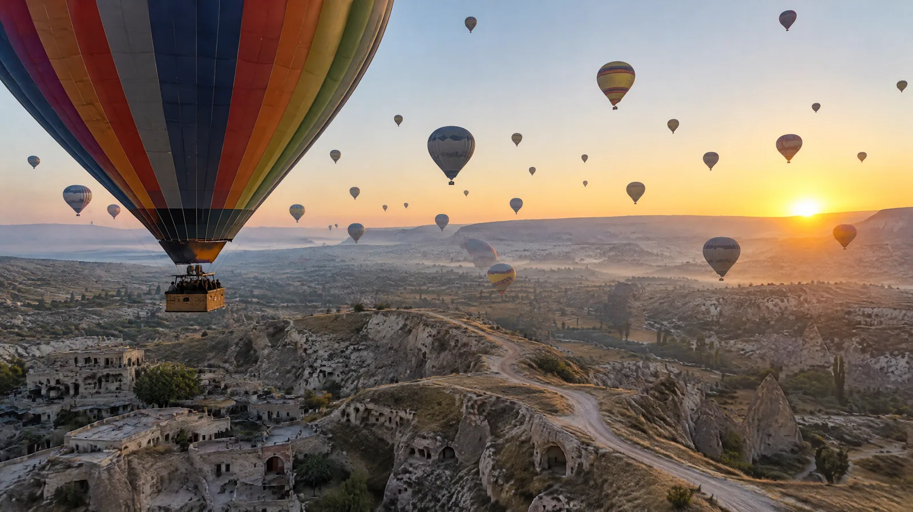

01Balon
Gökyüzü şafakta sizin.
Peribacalarının üstünde güneşin doğuşu. Küçük sepetler, deneyimli pilotlar, her sabah aynı özen.
- Kalkış05:00
- Uçuş60 dk
- DahilOtelden alım, kahvaltı, sertifika
- Grup
- Fiyat